Личная жизнь
Отношения и внутренний баланс
Если в отношениях с партнёром развод, расставание, одиночество, конфликт или усталость «я сама» — вместе найдём внутренний баланс и вектор, куда двигаться дальше.
Коуч ICF · Психолог · Автор книги · «Бизнес-мама года»
Помогаю тем, кто устал
жить в режиме «я сама»
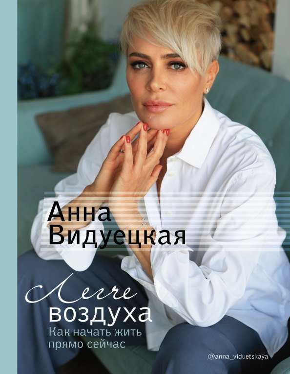
Моя книга — №1 на Amazon в категории Self Esteem
Книга о том, как начать жить прямо сейчас
Для женщин, которые не хотят выбирать между семьёй, карьерой и своим «Я». Сотни женщин уже добились успеха во всех сферах сразу по авторским стратегиям из книги. Сможете и вы!
«Я так больше не хочу» — фраза, с которой начинаются перемены
Обо мне
Я живу так, как учу. У меня четверо детей, две компании и работа вместе с мужем. Мне важно, чтобы всё было по-честному, а не как проще. Эта честность — прежде всего с собой — и дала мне возможность создать ту жизнь, которая у меня есть.
Долгое время я была уверена, что успех — это выбрать что-то одно. Оказалось, выбирать не нужно: женщина имеет право быть в любви, в деле и в своей жизни одновременно. Я прошла этот путь сама и почти десять лет помогаю пройти его другим — без надрыва и достигаторства.
Если вам откликается — начните с того формата, который ближе: книга, консультация или личная встреча.
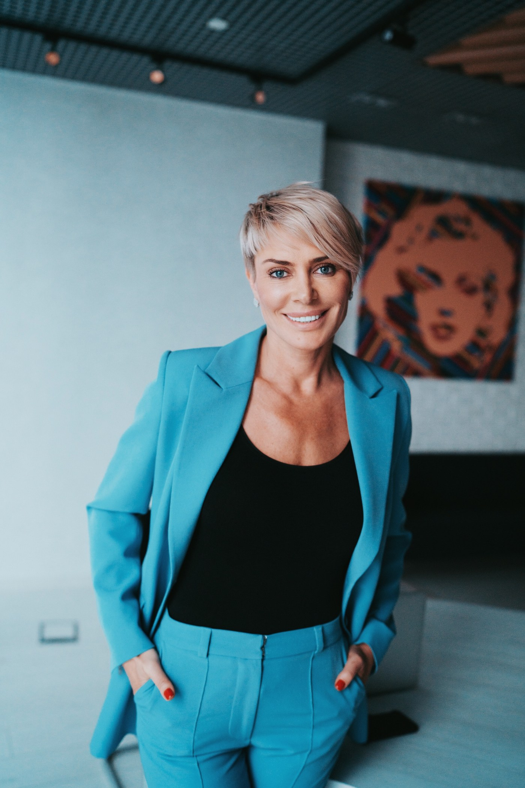
Консультации
За каждым запросом стоит одно желание — изменить то, что перестало устраивать. Чаще всего мы работаем по трём направлениям.
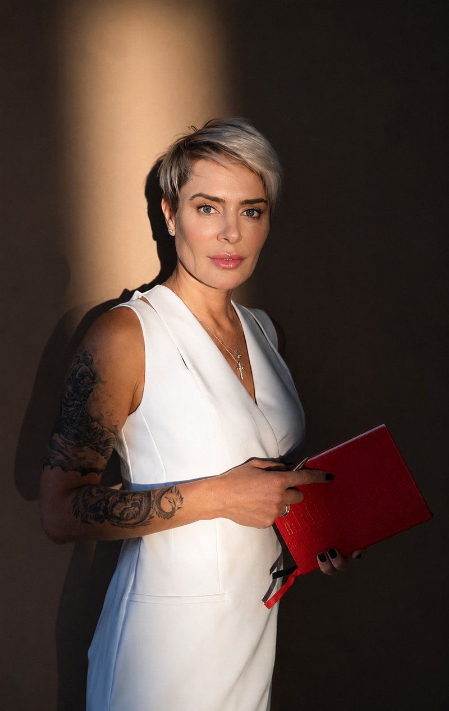
Личная жизнь
Если в отношениях с партнёром развод, расставание, одиночество, конфликт или усталость «я сама» — вместе найдём внутренний баланс и вектор, куда двигаться дальше.
Бизнес
Научитесь управлять людьми и усилите свой авторитет. Найдёте то самое «женское лидерство» и перестанете быть ломовой лошадью.
Партнёрские сессии
Если между вами и бизнес-партнёром прошла трещина — как медиатор помогу вам заново передоговориться и спасти дело.
Полтора-два часа один на один, конфиденциально. Вы уходите с честным разбором ситуации и конкретным планом действий.
Выступления
Говорю о партнёрстве, женской самореализации и о том, как оставаться собой, когда на тебе семья, дело и ответственность.
60–90 минут плюс 20–30 минут ответов на вопросы. Аудитория: публичное мероприятие, корпоративное мероприятие, закрытая частная лекция.
30–40 минут.
Аудитория, с которой я работаю лучше всего — взрослые люди 35+, предприниматели и руководители.
Сегодня бизнес и личная жизнь очень похожи: высокий шторм, неизвестность на всех уровнях, и одновременно — рекордный запрос на партнёрство, кооперацию, горизонтальные связи, а не на героев-одиночек. В такой реальности выигрывает не тот, кто сильнее всех, а тот, кто умеет строить союзы — в паре, в команде, в семье.
Содержание
Где и почему ломается коммуникация между поколениями — в компаниях и семьях. Как настроить эффективную коммуникацию между старшими и младшими: вместо «вы ничего не понимаете» — партнёрские договорённости, взаимное уважение, распределение ролей и зон ответственности.
Что получит аудитория
Как женщине-руководителю строить сильные команды и результаты без маски «железной леди» и роли «мамочки». Говорим о женском стиле лидерства: эмпатия и слышимость людей, стратегическое мышление, умение держать рамку и границы, не теряя человечности.
Что получит аудитория
Для тех, кто привык «всё на себе»: бизнес, дом, дети, команда. Разбираем, как выйти из роли вечной «лошадки» и спасателя, перестать компенсировать системные дыры личным подвигом и перейти к стратегическому управлению ресурсами — своими, команды, семьи.
Что получит аудитория
Три самые взрывоопасные темы в любых отношениях — деньги, контроль и влияние. Разберем, как говорить о деньгах, распределении власти, зоне решения и ответственности так, чтобы не разрушить партнёрство — в компании, в браке, в семейном бизнесе — а, наоборот, усилить его.
Что получит аудитория
Невозможно построить здоровое партнёрство с другими, если внутри — война. На встрече говорим о внутреннем «совете директоров» — наших ролях, страхах и амбициях, о том, как превратить внутреннего критика во внутреннего партнёра и научиться поддерживать себя, а не добивать.
Что получит аудитория
Пресс-центр
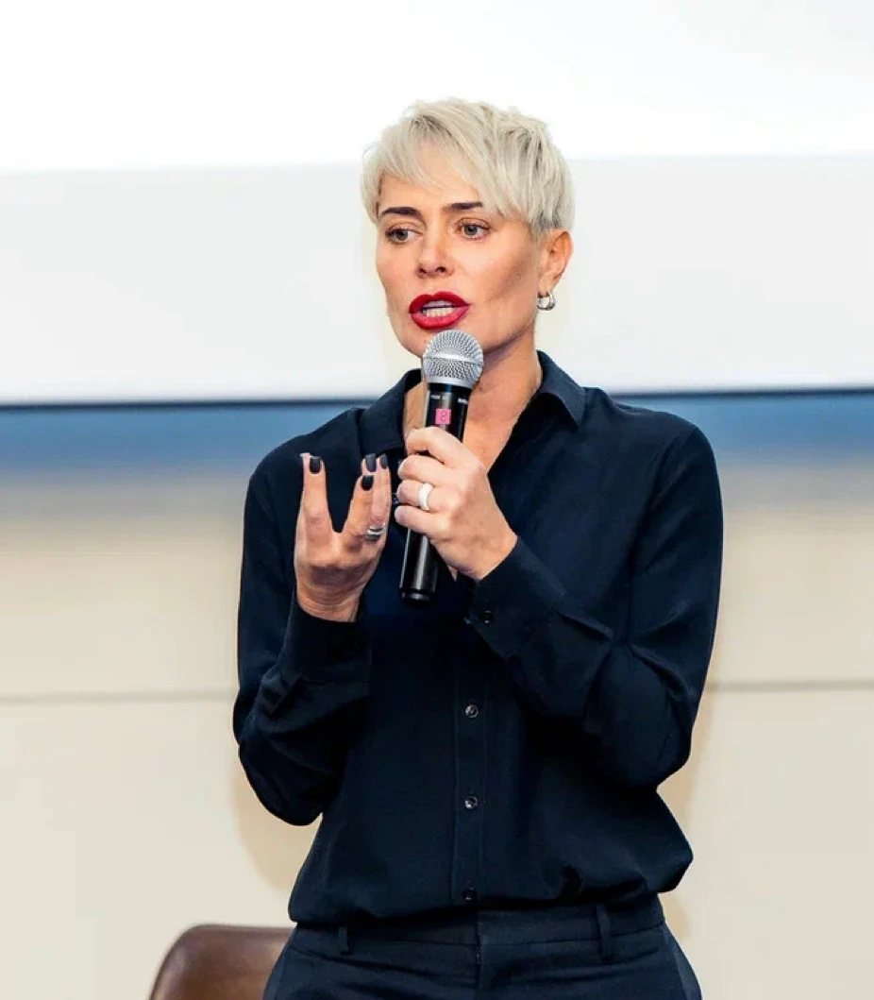
Публикации в СМИ
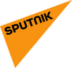
YouTube-канал
На моём YouTube-канале выходят подкасты и интервью про отношения, самореализацию и партнёрство.
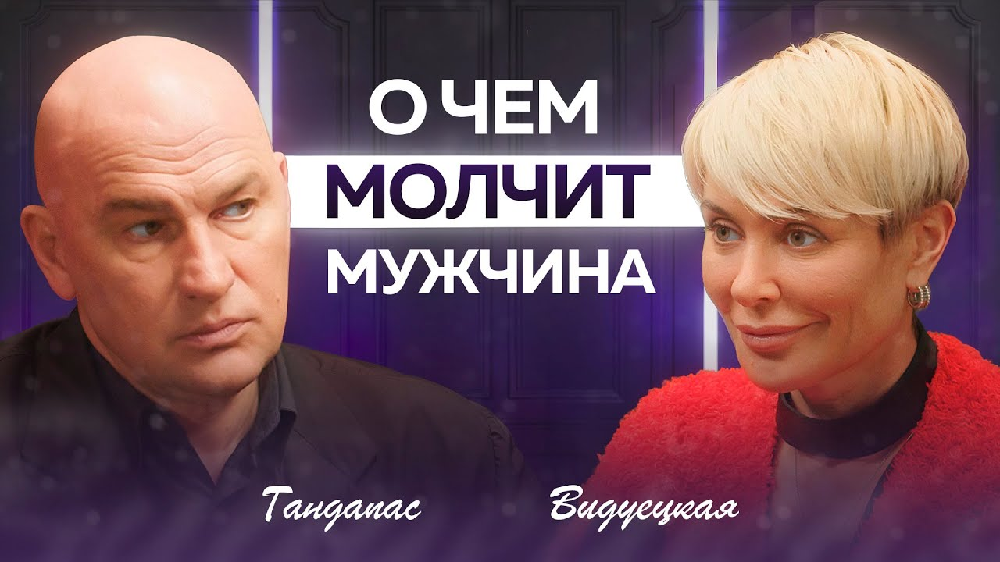
Выпуск с Радиславом Гандапасом
42 тыс. просмотров
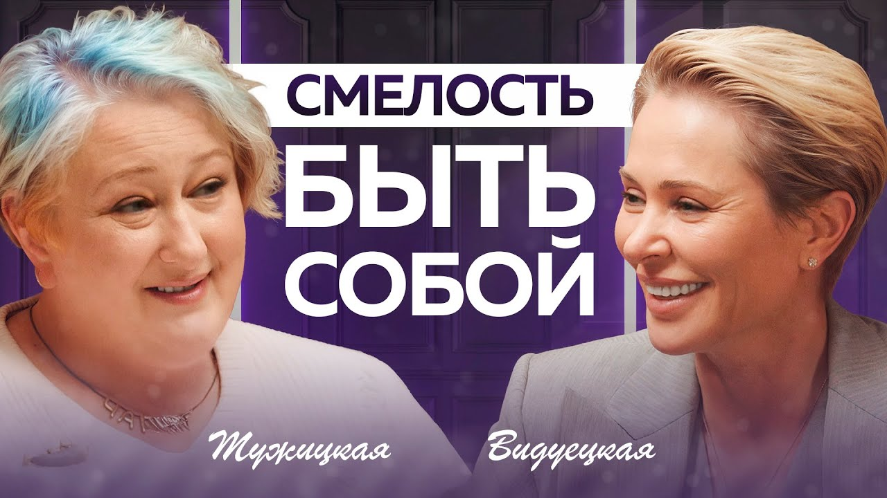
239 тыс. просмотров
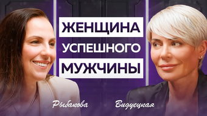
6,7 тыс. просмотров
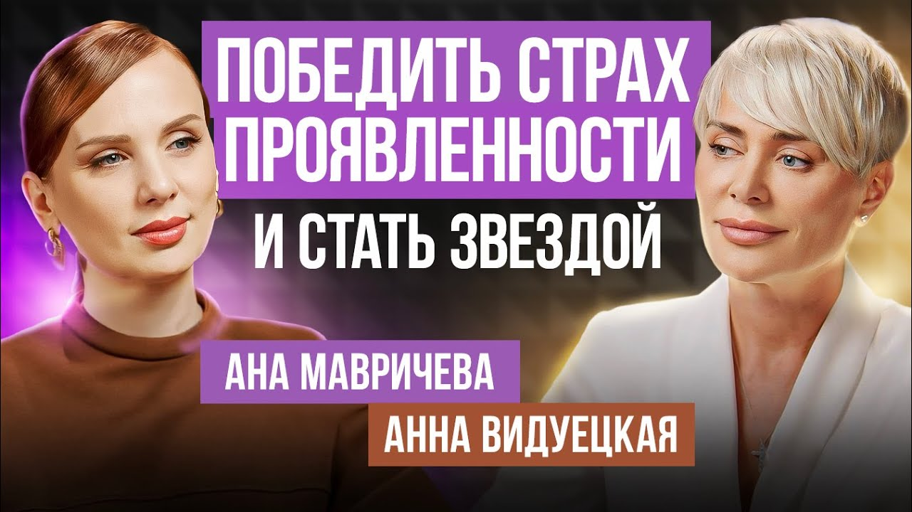
21 тыс. просмотров
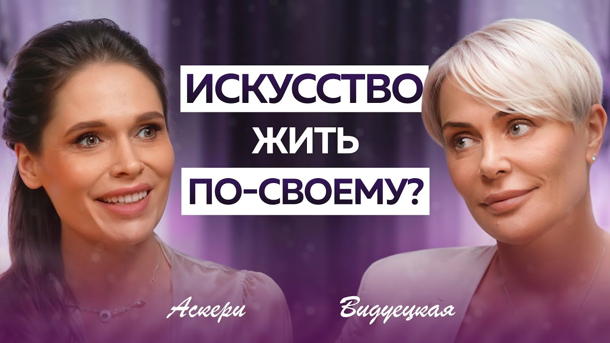
2,7 тыс. просмотров
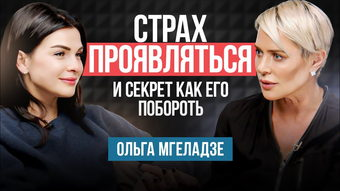
29 тыс. просмотров
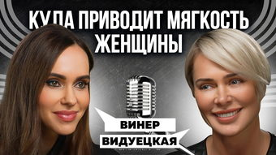
18 тыс. просмотров
Для думающих женщин, которые хотят большего.
Подписаться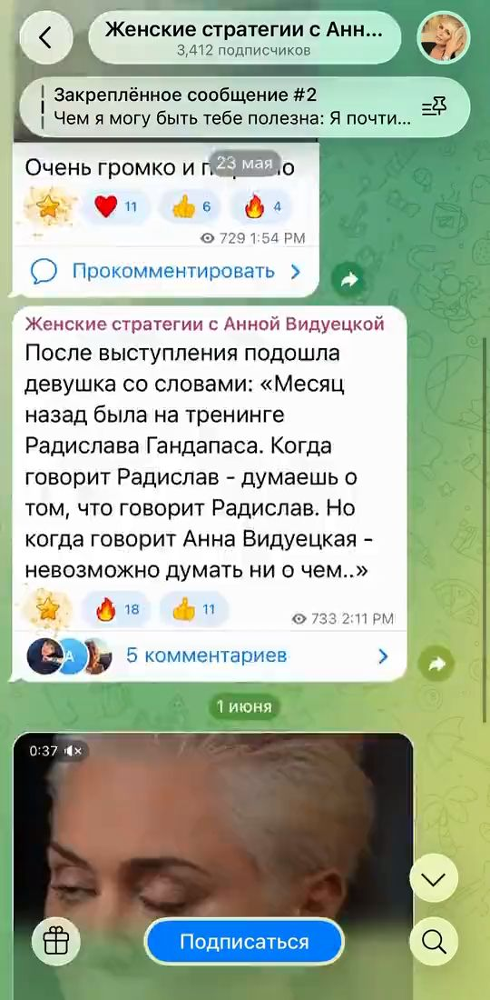